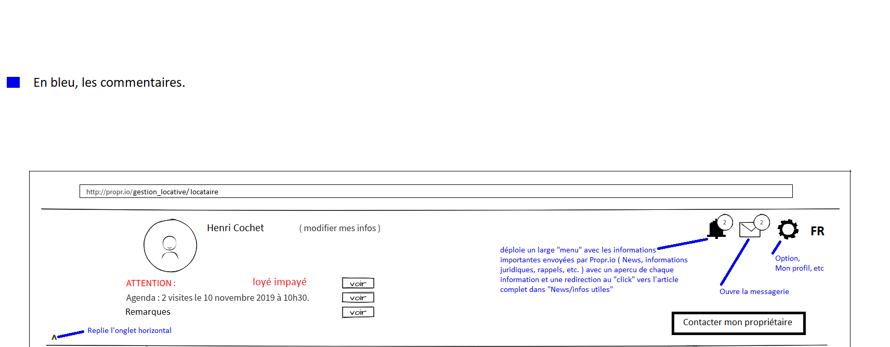
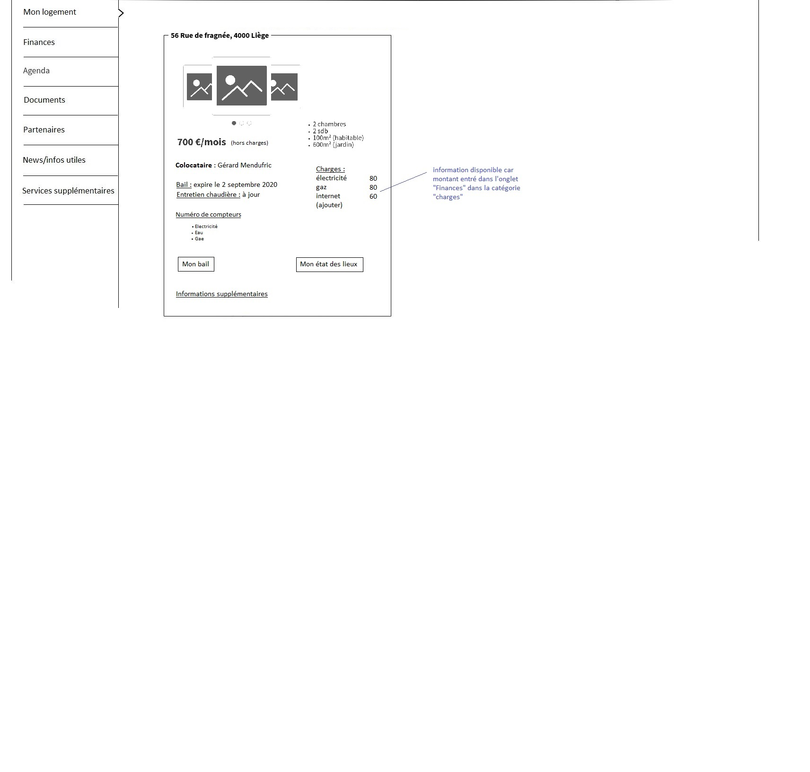

Présentation de l'application web de gestion locative coté locataire ;
L'application permet à un locataire de gérer sa location, son logement, les balances de paiements, son agenda, ses documents légaux et permettra aussi de trouver
un homme de métier ou tout autre professionnel utile dans la gestion d'une location (assureurs, avocats, fournisseurs d'énergie, internet, etc.).

